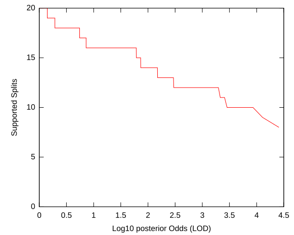
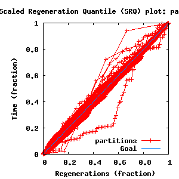
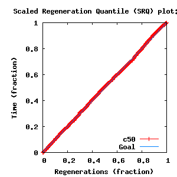
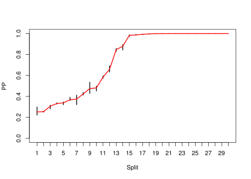
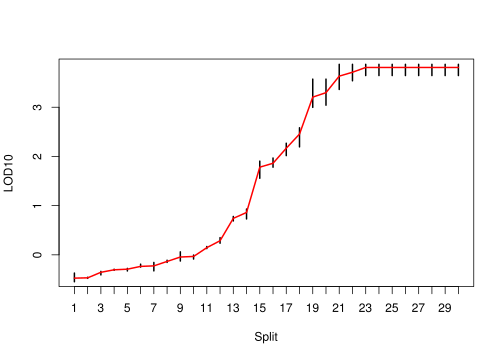

Sections:
directory: /home/biodept/br51/Work
subdirectory: few-globins-1
command line: bali-phy few-globins.fasta --smodel=LG+DP[6]
directory: /home/biodept/br51/Work
subdirectory: few-globins-2
command line: bali-phy few-globins.fasta --smodel=LG+DP[6]
directory: /home/biodept/br51/Work
subdirectory: few-globins-3
command line: bali-phy few-globins.fasta --smodel=LG+DP[6]
directory: /home/biodept/br51/Work
subdirectory: few-globins-4
command line: bali-phy few-globins.fasta --smodel=LG+DP[6]
| Partition | Sequences | Lengths | Substitution Model | Indel Model |
|---|---|---|---|---|
| 1 | few-globins.fasta | 141 - 190Amino-Acids | LG+DP[6] | RS07 |
| burn-in = 2446 samples | sub-sample = 5 | P(data|M) = -9470.622 +- 0.675 |
| Complete sample: 7311 topologies | 95% Bayesian credible interval: 6109 topologies |
| chain # | Iterations (after burnin) |
|---|---|
| 1 | 34815 samples |
| 2 | 22021 samples |
| 3 | 34482 samples |
| 4 | 37196 samples |

| Partition support: Summary |
| Partition support graph: SVG |
| 50% consensus | +L | SVG | |||||
| 66% consensus | +L | SVG | |||||
| 80% consensus | +L | SVG | |||||
| 90% consensus | +L | SVG | |||||
| 95% consensus | +L | SVG | |||||
| 99% consensus | +L | SVG | |||||
| 100% consensus | +L | SVG | |||||
| MAP | +L | SVG | |||||
| greedy | +L | SVG |
| Diff | Min. %identity | # Sites | Constant | Informative | ||||
|---|---|---|---|---|---|---|---|---|
| Initial | FASTA | HTML | Diff | 1.26% | 190 | 0 (0%) | 190 (100%) | |
| Best (WPD) | FASTA | HTML | AU | 8.04% | 353 | 2 (0.567%) | 229 (64.9%) |


| burnin (scalar) | Ne (scalar) | Ne (partition) | ASDSF | MSDSF | PSRF-CI80% | PSRF-RCF |
|---|---|---|---|---|---|---|
| 2192 | 77.71 | 1249.629 | 0.011 | 0.045 | 1.007 | 1.019 |


| Statistic | Median | 95% BCI | ACT | Ne | burnin | PSRF-CI80% | PSRF-RCF | |
|---|---|---|---|---|---|---|---|---|
| prior | -877.8 | (-938.5, -829.3) | 84.25 | 305 | 634 | 0.9964 | 1.007 | Trace |
| prior_A1 | -688.9 | (-746.1, -646.4) | 102.8 | 250 | 1386 | 0.994 | 0.9972 | Trace |
| likelihood | -9437 | (-9468, -9404) | 16.6 | 1548 | 319 | 0.9968 | 0.9992 | Trace |
| logp | -1.032e+04 | (-1.037e+04, -1.027e+04) | 43.69 | 588 | 607 | 1 | 1.008 | Trace |
| Heat.beta | 1 | |||||||
| Main.mu1 | 0.4924 | (0.3387, 0.739) | 1 | 25706 | 202 | 0.9989 | 0.9979 | Trace |
| S1.F.piA | 0.1177 | (0.1052, 0.1306) | 6.934 | 3707 | 235 | 1 | 1.008 | Trace |
| S1.F.piR | 0.02769 | (0.02196, 0.03436) | 7.849 | 3275 | 405 | 1.001 | 0.9816 | Trace |
| S1.F.piN | 0.03791 | (0.03136, 0.04532) | 6.595 | 3897 | 367 | 1.003 | 1.017 | Trace |
| S1.F.piD | 0.05681 | (0.04802, 0.06685) | 7.825 | 3285 | 464 | 1 | 0.9791 | Trace |
| S1.F.piC | 0.0139 | (0.008979, 0.02026) | 6.709 | 3831 | 311 | 0.9995 | 1.01 | Trace |
| S1.F.piQ | 0.0333 | (0.02747, 0.0397) | 7.354 | 3495 | 508 | 1.005 | 0.9932 | Trace |
| S1.F.piE | 0.05969 | (0.05095, 0.06902) | 7.943 | 3236 | 420 | 1.003 | 1.012 | Trace |
| S1.F.piG | 0.08591 | (0.07328, 0.09974) | 7.211 | 3564 | 497 | 0.9998 | 1.007 | Trace |
| S1.F.piH | 0.02676 | (0.02134, 0.03328) | 6.938 | 3705 | 271 | 0.9976 | 0.9969 | Trace |
| S1.F.piI | 0.03891 | (0.03221, 0.04679) | 6.844 | 3755 | 292 | 0.9997 | 1.005 | Trace |
| S1.F.piL | 0.08793 | (0.07487, 0.1023) | 7.878 | 3263 | 389 | 1.002 | 0.9993 | Trace |
| S1.F.piK | 0.07105 | (0.06071, 0.08226) | 9.399 | 2734 | 269 | 1.002 | 1.013 | Trace |
| S1.F.piM | 0.02338 | (0.01832, 0.0293) | 7.327 | 3508 | 245 | 1.001 | 1.006 | Trace |
| S1.F.piF | 0.0412 | (0.03265, 0.05043) | 7.901 | 3253 | 238 | 0.9946 | 0.9765 | Trace |
| S1.F.piP | 0.03838 | (0.03041, 0.0469) | 7.555 | 3402 | 295 | 1 | 0.9853 | Trace |
| S1.F.piS | 0.07202 | (0.06291, 0.08201) | 8.179 | 3142 | 202 | 0.9967 | 1.011 | Trace |
| S1.F.piT | 0.05416 | (0.04586, 0.06291) | 7.226 | 3557 | 357 | 1.002 | 0.9925 | Trace |
| S1.F.piW | 0.01064 | (0.006285, 0.0165) | 7.408 | 3470 | 769 | 1.002 | 1.005 | Trace |
| S1.F.piY | 0.02399 | (0.01801, 0.0311) | 8.453 | 3041 | 169 | 1.007 | 1.019 | Trace |
| S1.F.piV | 0.07618 | (0.06597, 0.08711) | 6.807 | 3776 | 608 | 0.9898 | 0.9752 | Trace |
| S1.DP.f1[S1] | 0.06767 | (0.02522, 0.1484) | 1.537 | 16722 | 227 | 0.9988 | 0.9942 | Trace |
| S1.DP.f2[S1] | 0.1579 | (0.0511, 0.334) | 1.037 | 24790 | 96 | 1.001 | 0.9963 | Trace |
| S1.DP.f3[S1] | 0.1805 | (0.05724, 0.3581) | 1.041 | 24703 | 98 | 0.9986 | 0.9916 | Trace |
| S1.DP.f4[S1] | 0.178 | (0.05826, 0.3578) | 1 | 25706 | 102 | 0.9986 | 0.9988 | Trace |
| S1.DP.f5[S1] | 0.1799 | (0.0593, 0.3558) | 1.023 | 25116 | 138 | 0.9988 | 0.992 | Trace |
| S1.DP.f6[S1] | 0.1924 | (0.06145, 0.3682) | 1 | 25706 | 84 | 0.998 | 0.9979 | Trace |
| S1.DP.rates1[S1] | 0.03091 | (0.008202, 0.05641) | 1.796 | 14314 | 183 | 0.9995 | 0.9973 | Trace |
| S1.DP.rates2[S1] | 0.09949 | (0.06482, 0.1295) | 1.312 | 19590 | 133 | 1.003 | 1.009 | Trace |
| S1.DP.rates3[S1] | 0.1373 | (0.1075, 0.1709) | 1.02 | 25205 | 195 | 0.9975 | 0.9988 | Trace |
| S1.DP.rates4[S1] | 0.1766 | (0.142, 0.2233) | 1.048 | 24524 | 89 | 1.002 | 1.001 | Trace |
| S1.DP.rates5[S1] | 0.2361 | (0.1876, 0.2885) | 1.095 | 23482 | 123 | 0.9985 | 0.9867 | Trace |
| S1.DP.rates6[S1] | 0.3152 | (0.2607, 0.3844) | 1.223 | 21016 | 63 | 1.001 | 1.002 | Trace |
| I1.RS07.logLambda | -4.476 | (-4.745, -4.222) | 1.776 | 14471 | 135 | 1.002 | 1.01 | Trace |
| I1.RS07.meanIndelLength | 3.859 | (3.159, 4.832) | 1.924 | 13361 | 168 | 1.006 | 1.007 | Trace |
| |A1| | 345 | (319, 365) | 330.8 | 77 | 2192 | 0.9558 | 1.015 | Trace |
| #indels1 | 84 | (78, 93) | 88.36 | 290 | 466 | 0.9 | 0.9929 | Trace |
| |indels1| | 301 | (276, 337) | 5.754 | 4467 | 320 | 0.95 | 1.004 | Trace |
| #substs1 | 2045 | (2023, 2066) | 83.88 | 306 | 726 | 0.9558 | 1.008 | Trace |
| |A| | 345 | (319, 365) | 330.8 | 77 | 2192 | 0.9558 | 1.015 | Trace |
| #indels | 84 | (78, 93) | 88.36 | 290 | 466 | 0.9 | 0.9929 | Trace |
| |indels| | 301 | (276, 337) | 5.754 | 4467 | 320 | 0.95 | 1.004 | Trace |
| #substs | 2045 | (2023, 2066) | 83.88 | 306 | 726 | 0.9558 | 1.008 | Trace |
| |T| | 25.43 | (23.03, 28.33) | 1.689 | 15216 | 193 | 0.9999 | 1.005 | Trace |
{kind=link}
{kind=link}
{kind=link}
{kind=link}
{kind=link}
{kind=link}
{kind=link}
{kind=link}
{kind=link}
{kind=link}
{kind=link}
{kind=link}
{kind=link}
{kind=link}
{kind=link}
{kind=link}
{kind=link}
{kind=link}
{kind=link}
{kind=link}
{kind=link}
{kind=link}
{kind=link}
{kind=link}
{kind=link}
{kind=link}
{kind=link}
{kind=link}
{kind=link}
{kind=link}
{kind=link}
{kind=link}
{kind=link}
{kind=link}
{kind=link}
{kind=link}
{kind=link}
{kind=link}
{kind=link}
{kind=link}
{kind=link}
{kind=link}
{kind=link}
{kind=link}
{kind=link}
{kind=link}
{kind=link}
{kind=link}
{kind=link}
{kind=link}
{kind=link}
{kind=link}
{kind=link}
{kind=link}
{kind=link}
{kind=link}
{kind=link}
{kind=link}
{kind=link}
{kind=link}